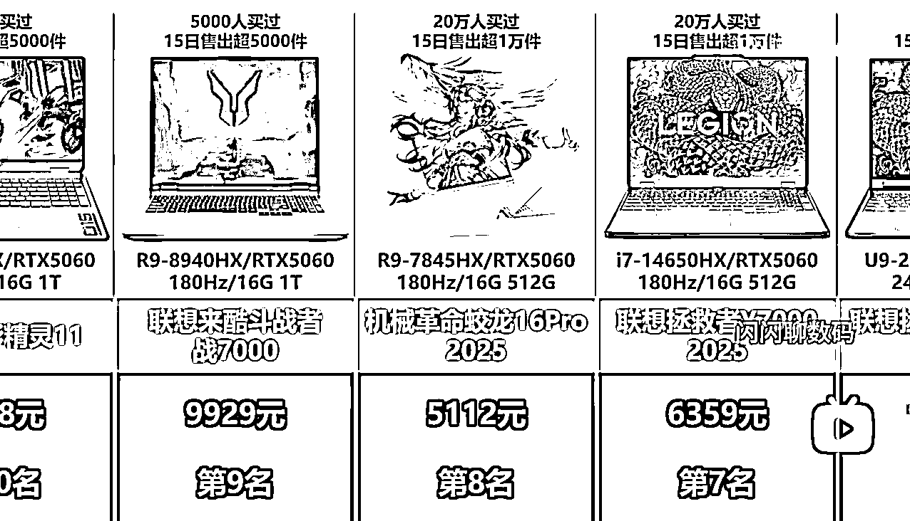

来源：https://xvgn5q6nqg.feishu.cn/docx/ESSZdpOmPow4zMxGkhBcse02nIe
如果对AI编程感兴趣的，可以看一下视频内容拆解的部分，自己写一个。
如果是想下载软件的，直接拉到软件分享部分。
之前写的一篇B站好物带货的软件，被加精华了。大家可以看一下。
AI编程：用cursor写了一个B站好物带货视频一键生成软件：https://t.zsxq.com/WDLzI
刚好没赶上亦仁老大的龙珠悬赏，帖子：https://wx.zsxq.com/group/1824528822/topic/5125485124124214
所以我又来了，给大家拆解一下B站百万带货榜里另一种玩法。并且带来一键生成软件。
下面两位百万带货UP主发布的视频内容，跟我上面软件生成的视频是差不多的。
两个都是连续上榜好几个月
https://space.bilibili.com/3546699228252464
https://space.bilibili.com/1767635624
更多的是拆解，大家可以通过下面的内容，发给AI，让AI帮忙生成一个专属于你的软件
我们在手机上逛京东，经常在商品页面在可以看到排行榜。
数据大概率是来自这里，这里的商品都是卖得不错的，我们也可以发布这里的商品，转化肯定也不错。
先通过插件采集想要的数据，插件的编写方法放到下面了。
1920*1080的图片，随便一个作图软件都可以生成，直接命名为beijing.png
这个用来添加商品图片，和一些参数上去，参数我们可以在数据来源的地方采集到。
一开始我们先弄一个单独的商品图片的背景，上面没有字，没有任何的图片。
弄一个空白的背景，命名shangpinbeijing.png，再让AI在纵坐标添加数据，居中对齐即可。
坐标需要自己去试，然后发给AI
开头的这个片段就是动态一个一个往里添加单个商品图片。
下面是第一段片段生成的ffmpeg命令行。
ffmpeg {导入图片组合}-filter_complex "{导入特效组合}" -map "[f{n}]" "{保存视频文件}"
{导入图片组合} 样式：-loop 1 -t 3 -i "C:\Users\Administrator\Desktop\排行榜视频生成\temp_1751273106\part1_video_assets\1.png" -loop 1 -t 3 -i "C:\Users\Administrator\Desktop\排行榜视频生成\temp_1751273106\part1_video_assets\2.png" -loop 1 -t 3 -i "C:\Users\Administrator\Desktop\排行榜视频生成\temp_1751273106\part1_video_assets\3.png" -loop 1 -t 3 -i "C:\Users\Administrator\Desktop\排行榜视频生成\temp_1751273106\part1_video_assets\4.png"
{导入特效组合} 样式：[0][1]xfade=transition=smoothup:duration=1:offset=2[f1];[f1][2]xfade=transition=smoothup:duration=1:offset=4[f2];[f2][3]xfade=transition=smoothup:duration=1:offset=6[f3]"
{n} 样式：3
视频从右往左滚动，就是滚动的图片，我们就先把第二步的单个商品图片合成一张长图片。
直接让AI把某个文件夹里的所有图片从左往右拼接到一张长图即可。

用第二步合成的长图片，直接生成一个从左往右滚动的图片。这是这一段的命令行。
ffmpeg -loop 1 -i {image} -filter_complex "[0:v]crop=1920:1080:x='if(gte(t*100,iw-1920),iw-1920,t*100)':y=0" -t {time} -c:v libx264 -crf 23 -preset ultrafast -y {video}
{image} 就是上面合成的图片地址
{time} 第二段视频的合成时间，是长图片的宽度/100+3
{video} 就是临时保存的视频地址
这一步就是我们最后要合成的一个视频了。直接用命令行合并就行。下面是这一段的命令行
ffmpeg -i {video1} -i {video2} -filter_complex "[0:v][1:v]concat=n=2:v=1:a=0[v]" -map "[v]" -c:v libx264 {output}
上面的参数分别是2.3里的片段，2.5里面的片段，还有最后要导出的视频地址。
直接用剪辑工具给加背景音乐，再加一个引导去评论区抢购的字幕就行
由于这个采集，涉及到数据，就不分享成品插件了。分享思路和提示词
打开排行榜界面后，获取图片，标题，价格，购买人数。
由于不能直接获取到商品链接，只能点击标题后，打开商品详情的链接。
获取到商品的链接，再跳转到排行榜的页面，点击下一个标题。
直接给大家分享一段提示词，直接发给cursor，生成即可，根据实际的运行效果改一下就行。
或者不懂cursor的，去某鱼找个人帮你写一下就行。花个100-200差不多了。
我需要写一个采集京东排行榜的浏览器插件。
1、获取所有商品主图的值，这是商品主图的xpath：//*[@id="J_babelOptPage"]/div/div[1]/div/div[2]/div/div/div[1]/div/div/div/div/div/div/div[3]/img
2、获取买过人数的列表，这是买过人数的xpath：//*[@id="J_babelOptPage"]/div/div[1]/div/div[2]/div/div/div[1]/div/div/div/div/div/div/div[6]/div[2]/div
3、获取商品价格的列表，这是商品价格的xpath：//*[@id="J_babelOptPage"]/div/div[1]/div/div[2]/div/div/div[1]/div/div/div/div/div/div/div[7]/div/div/div/div[1]
4、获取商品标题的列表，这是商品标题的xpath：//*[@id="J_babelOptPage"]/div/div[1]/div/div[2]/div/div/div[1]/div/div/div/div/div/div/div[5]
5、循环商品标题列表，点击商品标题，等页面加载完成后，获取页面的网址。通过正则表达式（wareId=(.*)&sourceType=）提取出商品ID。然后组合成这样的商品链接：https://item.jd.com/商品id.html。
6、当点击按钮开始采集的时候，先保存当前的排行榜网页地址。点击商品ID后，再跳转到当前的排行榜网页地址。等待2秒后，再获取商品标题的列表，再点击下一个标题。
7、把上面提取到的所有数据保存到表格里，表格的表头按这样排序：商品链接，商品主图，商品标题，商品价格，买过人数
8、保存价格的时候，把前面的￥去掉，如果有换行也去掉。
9、请严格按照上面的要求去写代码，不需要你自己发挥，不需要定位卡片，也不要通过标签获取链接。
复制出来后，分享到电脑，在浏览器打开
不然采集的时候采集出来的图片不是链接，是一段base64的内容，也不是我们采集到的内容。
参数是内置好的，建议大家根据上面的思路自己写一个。
如果用我的软件，最好换一个视频背景和商品背景。商品背景直接导入其它图片编辑软件然后根据比较改一下。
https://daming.lanzoum.com/b0ko7yqeb
直接在第一步采集到的数据里，改一下图片。
因为标题太长的话，添加到图片里，会显示不全，我们先改短一点就行。
直接选择上面的csv文件，然后选择数量，如果你选择生成的数量多的话
会比较久，有些人不会看完，正常来说10-20的数量会比较好。
然后就可以直接生成视频了。生成后就是导入剪辑软件进行最后的剪辑了。